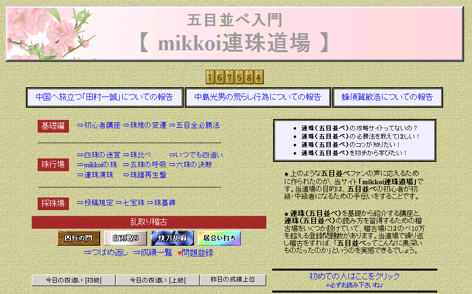

给大家提供几个国外的连珠论坛
#1 给大家提供几个国外的连珠论坛 作者：陶涛业余 发表时间：2012-4-24 14:50:23
我爱五子棋（波兰） http://gomoku.cixx6.com/
连珠、五子棋、六子棋论坛（俄罗斯） http://gomoku.3bb.ru/
在线连珠教室游戏中心（ORC） http://www.renjuclass.com/departments/theory/nnrs/help.html
一不小心注入了ando的连珠教室，我会尽量把里面的资料和作业下载下来，看看有没有有价值的东西。
日本连珠网站里有大量的连珠习题，比如说
東海支部連珠会http://hp.vector.co.jp/authors/VA051934/tokairenju/index.html
浜松連珠会 http://www4.tokai.or.jp/hamamatsurenju/
京都连珠会里有河村的讲座 http://www.kyogo.org/contents/kouza.html
《连珠世界》 http://i-alpha.com/renju/index.html
《连珠世界》邮件订阅地址 http://i-alpha.com/renju/renju00.htm
日本的连珠会的网站，都可以通过 http://www.renjusha.net/ 里面的“リンク集”来打开
连珠软件 伊達五目：http://www2k.biglobe.ne.jp/~tomo/aigames/date_gomoku.html
连珠小僧 http://homepage3.nifty.com/SGL/RENJU/
日本的其他连珠软件 http://www.vector.co.jp/vpack/filearea/win/game/table/igo/
俄罗斯的连珠软件下载地址 http://djoker.ucoz.ru/load/1
以后继续发现的好链接我会在回复里给出
［ 山城刀客 于 2012-4-24 15:01:01 时花20金币送鲜花一朵］
［ 山城刀客 于 2012-4-24 15:01:19 时花20金币送鲜花一朵］
［此帖子已被 陶涛业余 在 2012-4-24 15:16:30 编辑过］
［ 有志青年 于 2012-4-24 16:51:36 时奖励此帖[金币加 100 威望加1］
［ 暮雨迟 于 2012-4-24 21:58:41 时花20金币送鲜花一朵］
［ 反转 于 2012-4-26 8:20:15 时花20金币送鲜花一朵］
［ 虎哥 于 2012-4-26 8:38:34 时花20金币送鲜花一朵］
［ 虎哥 于 2012-4-26 8:39:37 时花20金币送鲜花一朵］
［ 小红眼镜 于 2012-4-26 10:07:42 时花20金币送鲜花一朵］
#2 Re:给大家提供几个国外的连珠论坛 作者：有志青年 发表时间：2012-4-24 16:53:21
没有理由不奖励，没有理由不推荐精华，没有理由不回复
我们需要更多的网站来相互补充资源
［ 陶涛业余 于 2012-4-24 22:21:34 时花20金币送鲜花一朵］
［ 陶涛业余 于 2012-4-24 22:21:47 时花20金币送鲜花一朵］
#3 Re:陶涛业余【==给大家提供几个国外的连珠论坛==】 作者：陶涛业余 发表时间：2012-4-25 22:18:18
持续更新中
mikkoi連珠道場 http://table28.renju.info/
里面有习题、连珠道场，新手讲座等

#4 Re:给大家提供几个国外的连珠论坛 作者：陶涛业余 发表时间：2012-4-26 18:52:08
五手两打概要（个人觉得写的很全，很值得新手作为山口规则入门参考）
#5 Re:给大家提供几个国外的连珠论坛 作者：极地剑客 发表时间：2012-5-16 2:01:29
围观。。。。